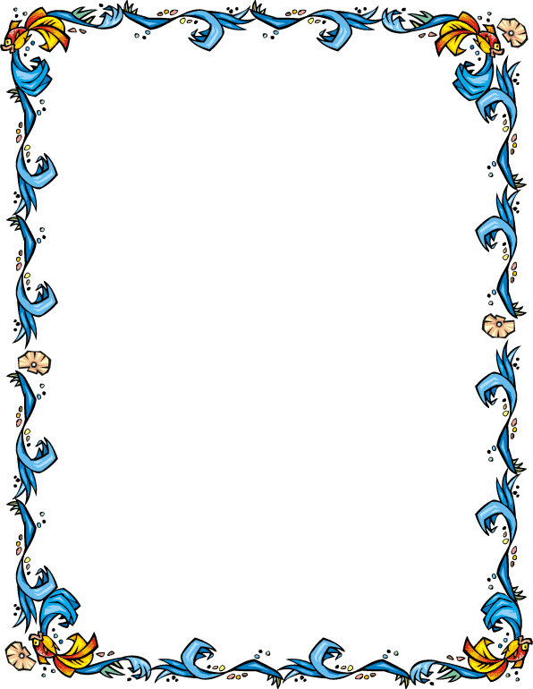

Border Images
- The border-image property allows you to use an image as a border around an element
- Syntax: border-image(url(image url), slice, color stop, ...)
- direction (optional)
- an angle: 45deg
- to a side: to left
- to a corner: to top left
- color and stop
- color can be a color keyword, rgb, rgba, hsl, or hsla: blue
- stop (optional) can be a percentage or a pixel value: 70%
- any number of color stop pairs can be listed
- Let's start with this image:

- Now make it the border around a div
style="border-image: url(border.png) 50 stretch;"
This div has an image for a border
Note that we had to give it a wider border so that we could see the border image (must be viewed in a browser) - Try it: W3Schools,
CSS3 border-image Property